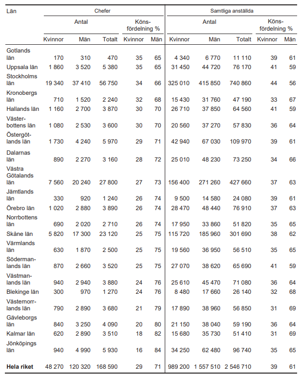
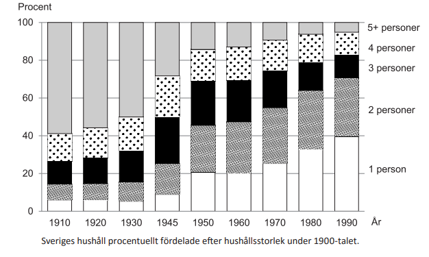
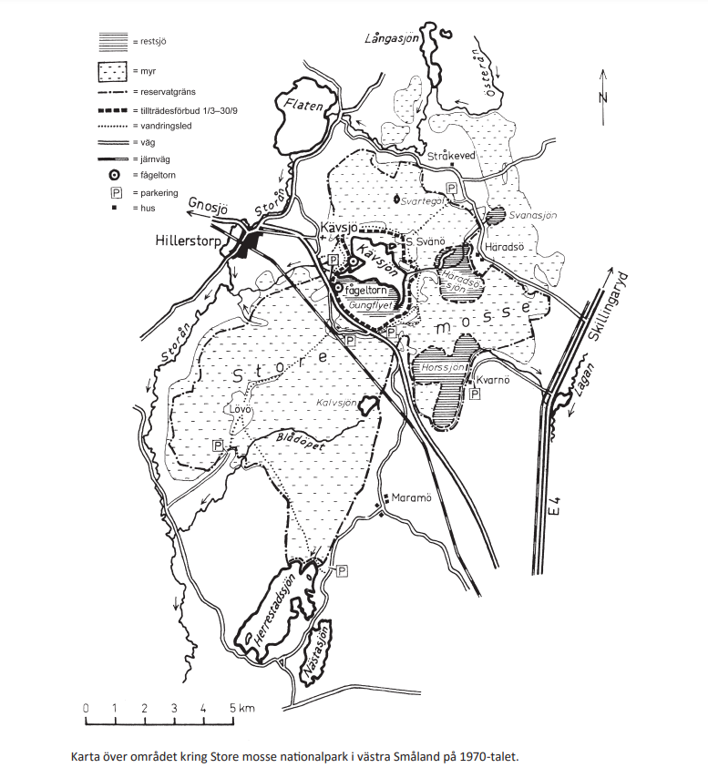
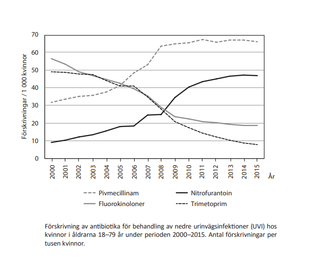
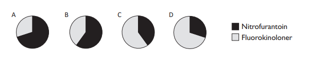

Diagramdelen
Består av 12 uppgifter som är kopplade till olika kartor, tabeller och diagram och uppgifterna går att lösa genom att läsa av dessa samt göra diverse uträkningar.
Matteövningar
Kvinnor och män i näringslivet
Antalet chefer respektive samtliga anställda inom privat sektor 2012, uppdelat på kvinnor och män samt på län.
Uppgifter
29.
Hur många av länen hade en större andel kvinnliga chefer än riket som helhet?
30.
Studera Gävleborgs län. Hur stor var skillnaden mellan andelen män bland samtliga anställda och andelen män bland chefer?
31.
Identifiera länet som hade den jämnaste könsfördelningen bland samtliga anställda. Vilket var förhållandet kvinnor : män bland cheferna i detta län?
Hushållens storlek under 1900-talet
Uppgifter
32.
Studera hur andelen hushåll med 3 personer har förändrats. Mellan vilka av nedanstående år skedde den största förändringen, i procentenheter räknat?
33.
År 1980 fanns det cirka 3 498 000 hushåll i Sverige. Hur många hade hushållsstorleken 2 personer?
34.
Jämför 1910 och 1990. För vilken hushållsstorlek gällde att dess andel hade förändrats med 33 procentenheter?
Store Mosse Nationalpark
Uppgifter
35.
Utgå från fågeltornet som ligger vid Gungflyet. I vilken riktning ligger det andra fågeltornet?
36.
Hur stort är området som har tillträdesförbud perioden mars–september?
37.
Utgå från den sydligast belägna parkeringen i området. Följ vandringsleden norrut fram till järnvägen. Hur lång är sträckan?
Förskrivning av antibiotika
Uppgifter
38.
Vilket cirkeldiagram illustrerar förhållandet mellan antalet förskrivningar per tusen kvinnor av nitrofurantoin och fluorokinoloner år 2013?
39.
Hur stor andel av de redovisade antibiotikaförskrivningarna per tusen kvinnor år 2003 avsåg pivmecillinam?
40.
År 2011 var antalet kvinnor i åldrarna 18–79 år cirka 3,5 miljoner. Hur många förskrivningar gjordes totalt av de fyra redovisade antibiotikasorterna under detta år?